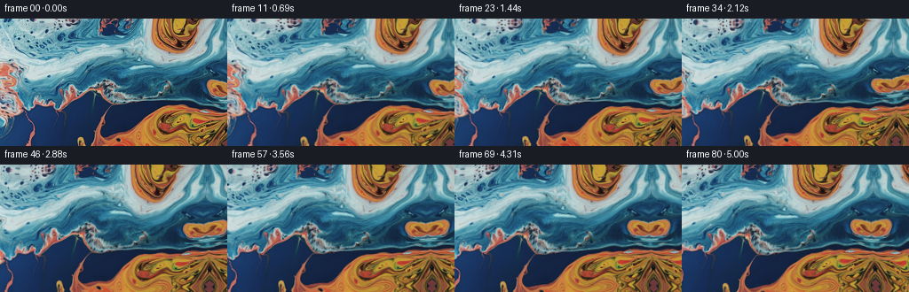
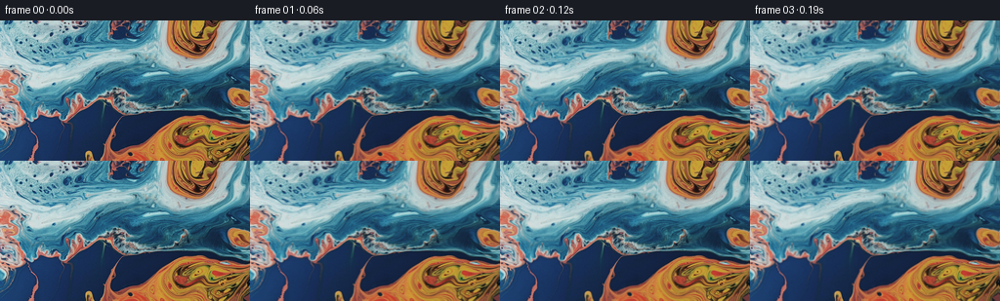
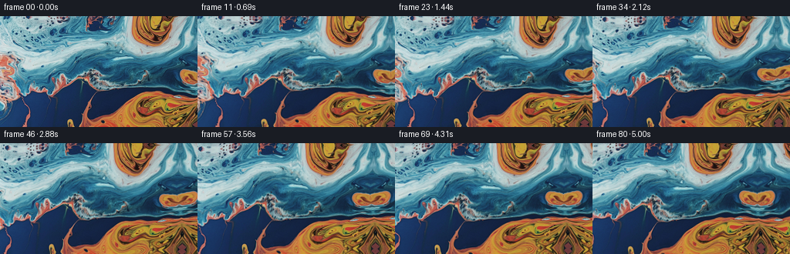
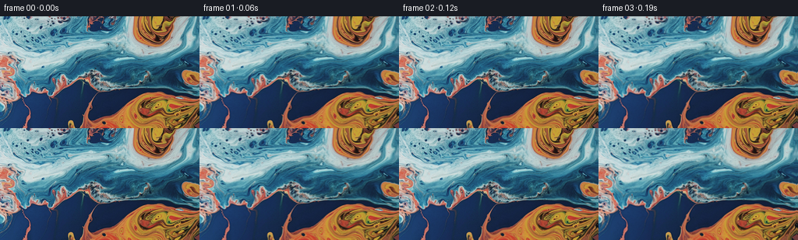

← 本轮 smoke 总览traex/GPT-6.1-Sol · 0002_s3
text · 256×144 · 16.0 FPS · 81 帧 · 状态 complete · 输出 tokens 5388
原始任务a close up of a blue and orange liquid, camera pans right
当前保存结果
已保存候选与代码修改
这里按时间展示外部捕获的候选，每份均可单独播放。保存新版本不等于完成视觉检查；下方工具证据记录实际看过的图。
候选 01 · 2026-11-09T00:52:59.042785+00:00 · 点开播放与检查图
inspection.png

transition_check.png

代码变化
--- 上一保存版本
+++ 本次保存版本
@@ -0,0 +1,105 @@
+"""Generate an RGB macro-liquid shot using only the supplied initial pixels.
+
+A slow horizontal camera track is combined with an area-preserving, multiscale
+liquid displacement. Reflected continuations are locally bent to avoid straight
+boundary stretching. No models, reference material, or rendering tools are used.
+"""
+from pathlib import Path
+import numpy as np
+from PIL import Image
+import artifact_io
+
+ROOT = Path(__file__).resolve().parent
+
+
+def reflect(c, length):
+ c = np.mod(c, 2.0 * (length - 1))
+ return np.where(c <= length - 1, c, 2.0 * (length - 1) - c)
+
+
+def sample(image, x, y):
+ h, w = image.shape[:2]
+ x = reflect(x, w)
+ y = reflect(y, h)
+ x0 = np.floor(x).astype(np.int32)
+ y0 = np.floor(y).astype(np.int32)
+ x1 = np.minimum(x0 + 1, w - 1)
+ y1 = np.minimum(y0 + 1, h - 1)
+ fx = (x - x0)[..., None]
+ fy = (y - y0)[..., None]
+ return ((1 - fy) * ((1 - fx) * image[y0, x0] + fx * image[y0, x1])
+ + fy * ((1 - fx) * image[y1, x0] + fx * image[y1, x1]))
+
+
+# The stream function wave modes give a smooth, divergence-free liquid motion.
+# (wavelength, angle, speed, velocity amplitude, phase)
+MODES = [
+ (156.0, 0.34, 0.67, 1.95, 0.4),
+ (112.0, 1.16, -0.83, 1.30, 2.1),
+ (76.0, -0.62, 1.02, 0.85, 4.3),
+ (47.0, 0.83, -1.31, 0.47, 1.3),
+ (28.0, -0.29, 1.67, 0.29, 3.0),
+ (17.0, 1.29, -2.03, 0.13, 5.2),
+]
+
+
+def integrated_flow(x, y, t):
+ u = np.zeros_like(x)
+ v = np.zeros_like(y)
+ for wavelength, angle, omega, amplitude, phase in MODES:
+ k = 2.0 * np.pi / wavelength
+ kx, ky = k * np.cos(angle), k * np.sin(angle)
+ a = kx * x + ky * y + phase
+ # Integral of the travelling sinusoidal stream velocity from 0 to t.
+ d = amplitude / omega * (np.sin(a + omega * t) - np.sin(a))
+ u += np.sin(angle) * d
+ v -= np.cos(angle) * d
+ # A very broad and slow circulating flow adds nonperiodic gentle rolling.
+ cx, cy = 164.0, 81.0
+ falloff = np.exp(-((x - cx)**2 / 150.0**2 + (y - cy)**2 / 115.0**2))
+ u += 0.011 * t * (y - cy) * falloff
+ v -= 0.011 * t * (x - cx) * falloff
+ return u, v
+
+
+def generate():
+ source = np.asarray(Image.open(ROOT / 'first_frame.png').convert('RGB'))
+ assert source.shape == (144, 256, 3)
+ image = source.astype(np.float64)
+ yy, xx = np.mgrid[:144, :256].astype(np.float64)
+ frames = np.empty((81, 144, 256, 3), dtype=np.uint8)
+ frames[0] = source
+ for i in range(1, 81):
+ t = i / 16.0
+ # Rightward camera pan: fixed details move left at 8.4 pixels/sec.
+ cam = 8.4 * t - 0.65 * (1.0 - np.exp(-t / 0.48))
+ world_x = xx + cam
+ world_y = yy + 0.22 * np.sin(t * 0.62)
+ du, dv = integrated_flow(world_x, world_y, t)
+ sx = world_x - du
+ sy = world_y - dv
+ # Continue the small newly revealed strip in a softly curved fold.
+ # Bending is zero at the original boundary and has a zero derivative.
+ extra = np.maximum(sx - 255.0, 0.0)
+ sy += 0.0055 * extra**2 * (0.75 + 0.25 * np.sin(yy / 23.0))
+ sx += 0.0020 * extra**2 * np.sin(yy / 18.0 + 0.9)
+ rgb = sample(image, sx, sy)
+ # Tiny, slow changes in wet specular brightness, never new solid shapes.
+ # The specular mask is transported with the pigment, not screen-fixed.
+ bright = np.clip((rgb.mean(axis=2) - 117.0) / 88.0, 0.0, 1.0)
+ phase = sx * 0.055 + sy * 0.074
+ shimmer = 1.6 * bright**2 * (np.sin(phase - 0.91 * t) - np.sin(phase))
+ rgb += shimmer[..., None] * np.array([0.87, 0.97, 1.0])
+ frames[i] = np.clip(np.rint(rgb), 0, 255).astype(np.uint8)
+ artifact_io.save(frames, ROOT)
+ return frames
+
+
+if __name__ == '__main__':
+ frames = generate()
+ original = np.asarray(Image.open(ROOT / 'first_frame.png').convert('RGB'))
+ assert np.array_equal(frames[0], original)
+ delta = np.abs(np.diff(frames.astype(np.float32), axis=0)).mean(axis=(1, 2, 3))
+ print('Saved', frames.shape, frames.dtype)
+ print('Mean adjacent RGB change: %.3f; range %.3f to %.3f' %
+ (delta.mean(), delta.min(), delta.max()))
候选 02 · 2026-11-09T00:53:34.374542+00:00 · 点开播放与检查图
inspection.png

transition_check.png

代码变化
--- 上一保存版本
+++ 本次保存版本
@@ -23,12 +23,27 @@
y = reflect(y, h)
x0 = np.floor(x).astype(np.int32)
y0 = np.floor(y).astype(np.int32)
- x1 = np.minimum(x0 + 1, w - 1)
- y1 = np.minimum(y0 + 1, h - 1)
- fx = (x - x0)[..., None]
- fy = (y - y0)[..., None]
- return ((1 - fy) * ((1 - fx) * image[y0, x0] + fx * image[y0, x1])
- + fy * ((1 - fx) * image[y1, x0] + fx * image[y1, x1]))
+ fx = x - x0
+ fy = y - y0
+
+ def weights(f):
+ # Catmull-Rom reconstruction preserves the fine liquid highlight ridges.
+ return (-0.5*f + f*f - 0.5*f*f*f,
+ 1.0 - 2.5*f*f + 1.5*f*f*f,
+ 0.5*f + 2.0*f*f - 1.5*f*f*f,
+ -0.5*f*f + 0.5*f*f*f)
+
+ wx, wy = weights(fx), weights(fy)
+ result = np.zeros(x.shape + (3,), dtype=np.float64)
+ for j in range(4):
+ iy = reflect(y0 + j - 1, h).astype(np.int32)
+ row = np.zeros_like(result)
+ for k in range(4):
+ ix = reflect(x0 + k - 1, w).astype(np.int32)
+ row += image[iy, ix] * wx[k][..., None]
+ result += row * wy[j][..., None]
+ return np.clip(result, 0.0, 255.0)
+
# The stream function wave modes give a smooth, divergence-free liquid motion.
候选 03 · 2026-11-09T00:53:39.591718+00:00 · 点开播放与检查图
inspection.png

transition_check.png

代码变化
代码未变化；重新保存了产物。
可观测工具行为
命令 1 · 2026-11-09T00:51:36.913834+00:00/bin/bash -lc 'ls -la; cat prompt.txt; cat GENERATION_RULES.md'
exit 0 命令 2 · 2026-11-09T00:51:45.272933+00:00/bin/bash -lc "cat task_spec.json; cat artifact_io.py; python - <<'PY'
from PIL import Image
import numpy as np
im=np.array(Image.open('first_frame.png').convert('RGB'));print(im.shape)
print('range',im.min((0,1)),im.max((0,1)),'mean',im.mean((0,1)))
# mean colors on 32x18 grid
small=np.array(Image.fromarray(im).resize((48,27)))
# color categories for image composition: orange o,O; blue b,B; gray .; dark blank; white W
for row in small:
s=''
for r,g,b in row.astype(float):
m=max(r,g,b)
if m<35:c=' '
elif r>b*1.35 and r>g*1.2:c='O' if r>160 else 'o'
elif b>r*1.35:c='B' if b>140 else 'b'
elif r>140 and g>110 and b<g*.8:c='Y'
elif min(r,g,b)>175:c='W'
else:c='.'
s+=c
print(s)
print('rows',im.mean(1).round().astype(int))
PY"exit 0 命令 3 · 2026-11-09T00:52:06.641410+00:00/bin/bash -lc "python - <<'PY'
import numpy as np
from PIL import Image
im=np.array(Image.open('first_frame.png')).astype(float)
print('x gradient/y gradient', np.mean(abs(np.diff(im,axis=1))),np.mean(abs(np.diff(im,axis=0))))
for y in [0,16,32,48,64,80,96,112,128,143]:
print(y, [tuple(v.astype(int)) for v in im[y,::12]])
PY"exit 0 命令 4 · 2026-11-09T00:52:55.192088+00:00/bin/bash -lc "cat > generate.py <<'PY'
\"\"\"Generate an RGB macro-liquid shot using only the supplied initial pixels.
A slow horizontal camera track is combined with an area-preserving, multiscale
liquid displacement. Reflected continuations are locally bent to avoid straight
boundary stretching. No models, reference material, or rendering tools are used.
\"\"\"
from pathlib import Path
import numpy as np
from PIL import Image
import artifact_io
ROOT = Path(__file__).resolve().parent
def reflect(c, length):
c = np.mod(c, 2.0 * (length - 1))
return np.where(c <= length - 1, c, 2.0 * (length - 1) - c)
def sample(image, x, y):
h, w = image.shape[:2]
x = reflect(x, w)
y = reflect(y, h)
x0 = np.floor(x).astype(np.int32)
y0 = np.floor(y).astype(np.int32)
x1 = np.minimum(x0 + 1, w - 1)
y1 = np.minimum(y0 + 1, h - 1)
fx = (x - x0)[..., None]
fy = (y - y0)[..., None]
return ((1 - fy) * ((1 - fx) * image[y0, x0] + fx * image[y0, x1])
+ fy * ((1 - fx) * image[y1, x0] + fx * image[y1, x1]))
# The stream function wave modes give a smooth, divergence-free liquid motion.
# (wavelength, angle, speed, velocity amplitude, phase)
MODES = [
(156.0, 0.34, 0.67, 1.95, 0.4),
(112.0, 1.16, -0.83, 1.30, 2.1),
(76.0, -0.62, 1.02, 0.85, 4.3),
(47.0, 0.83, -1.31, 0.47, 1.3),
(28.0, -0.29, 1.67, 0.29, 3.0),
(17.0, 1.29, -2.03, 0.13, 5.2),
]
def integrated_flow(x, y, t):
u = np.zeros_like(x)
v = np.zeros_like(y)
for wavelength, angle, omega, amplitude, phase in MODES:
k = 2.0 * np.pi / wavelength
kx, ky = k * np.cos(angle), k * np.sin(angle)
a = kx * x + ky * y + phase
# Integral of the travelling sinusoidal stream velocity from 0 to t.
d = amplitude / omega * (np.sin(a + omega * t) - np.sin(a))
u += np.sin(angle) * d
v -= np.cos(angle) * d
# A very broad and slow circulating flow adds nonperiodic gentle rolling.
cx, cy = 164.0, 81.0
falloff = np.exp(-((x - cx)**2 / 150.0**2 + (y - cy)**2 / 115.0**2))
u += 0.011 * t * (y - cy) * falloff
v -= 0.011 * t * (x - cx) * falloff
return u, v
def generate():
source = np.asarray(Image.open(ROOT / 'first_frame.png').convert('RGB'))
assert source.shape == (144, 256, 3)
image = source.astype(np.float64)
yy, xx = np.mgrid[:144, :256].astype(np.float64)
frames = np.empty((81, 144, 256, 3), dtype=np.uint8)
frames[0] = source
for i in range(1, 81):
t = i / 16.0
# Rightward camera pan: fixed details move left at 8.4 pixels/sec.
cam = 8.4 * t - 0.65 * (1.0 - np.exp(-t / 0.48))
world_x = xx + cam
world_y = yy + 0.22 * np.sin(t * 0.62)
du, dv = integrated_flow(world_x, world_y, t)
sx = world_x - du
sy = world_y - dv
# Continue the small newly revealed strip in a softly curved fold.
# Bending is zero at the original boundary and has a zero derivative.
extra = np.maximum(sx - 255.0, 0.0)
sy += 0.0055 * extra**2 * (0.75 + 0.25 * np.sin(yy / 23.0))
sx += 0.0020 * extra**2 * np.sin(yy / 18.0 + 0.9)
rgb = sample(image, sx, sy)
# Tiny, slow changes in wet specular brightness, never new solid shapes.
# The specular mask is transported with the pigment, not screen-fixed.
bright = np.clip((rgb.mean(axis=2) - 117.0) / 88.0, 0.0, 1.0)
phase = sx * 0.055 + sy * 0.074
shimmer = 1.6 * bright**2 * (np.sin(phase - 0.91 * t) - np.sin(phase))
rgb += shimmer[..., None] * np.array([0.87, 0.97, 1.0])
frames[i] = np.clip(np.rint(rgb), 0, 255).astype(np.uint8)
artifact_io.save(frames, ROOT)
return frames
if __name__ == '__main__':
frames = generate()
original = np.asarray(Image.open(ROOT / 'first_frame.png').convert('RGB'))
assert np.array_equal(frames[0], original)
delta = np.abs(np.diff(frames.astype(np.float32), axis=0)).mean(axis=(1, 2, 3))
print('Saved', frames.shape, frames.dtype)
print('Mean adjacent RGB change: %.3f; range %.3f to %.3f' %
(delta.mean(), delta.min(), delta.max()))
PY
python generate.py"exit 0 命令 5 · 2026-11-09T00:53:06.988549+00:00/bin/bash -lc "python - <<'PY'
from pathlib import Path
from PIL import Image
import numpy as np
p=np.load('pixels.npz')['pixels']
a=np.stack([(p>>16)&255,(p>>8)&255,p&255],axis=-1).transpose(2,0,1,3).astype('uint8')
assert a.shape==(81,144,256,3)
assert np.array_equal(a[0],np.array(Image.open('first_frame.png').convert('RGB')))
print('Frame 0 exact; 81 RGB frames; duration=5.0625 s; fps=16')
for i in [0,20,40,60,80]:
print(i,'RGB mean:',a[i].mean((0,1)).round(1),'gradient:',round(abs(np.diff(a[i].astype(float),axis=1)).mean(),2))
# Approximate horizontal translation from corresponding vertical crop, excluding
# extension and the strong areas of liquid warp.
for i in [20,40,60,80]:
errs=[]
for shift in range(0,52):
errs.append(abs(a[i,16:128,16:180].astype(float)-a[0,16:128,16+shift:180+shift].astype(float)).mean())
print('frame',i,'best rightward source shift',int(np.argmin(errs)))
print('Files:', [(f,Path(f).stat().st_size) for f in ['generate.py','pixels.npz','index.html','inspection.png']])
PY"exit 0 命令 6 · 2026-11-09T00:53:32.601700+00:00/bin/bash -lc "python - <<'PY'
p='generate.py'
s=open(p).read()
a=s.index(' x0 = np.floor(x).astype(np.int32)')
b=s.index('\\n\\n\\n# The stream',a)
s=s[:a]+''' x0 = np.floor(x).astype(np.int32)
y0 = np.floor(y).astype(np.int32)
fx = x - x0
fy = y - y0
def weights(f):
# Catmull-Rom reconstruction preserves the fine liquid highlight ridges.
return (-0.5*f + f*f - 0.5*f*f*f,
1.0 - 2.5*f*f + 1.5*f*f*f,
0.5*f + 2.0*f*f - 1.5*f*f*f,
-0.5*f*f + 0.5*f*f*f)
wx, wy = weights(fx), weights(fy)
result = np.zeros(x.shape + (3,), dtype=np.float64)
for j in range(4):
iy = reflect(y0 + j - 1, h).astype(np.int32)
row = np.zeros_like(result)
for k in range(4):
ix = reflect(x0 + k - 1, w).astype(np.int32)
row += image[iy, ix] * wx[k][..., None]
result += row * wy[j][..., None]
return np.clip(result, 0.0, 255.0)
'''+s[b:]
open(p,'w').write(s)
PY
python generate.py
python - <<'PY'
from PIL import Image
import numpy as np
for i in [0,1,20,80]:
a=np.asarray(Image.open(f'frames/{i:02d}.png')).astype(float)
print(i, 'RGB spatial detail:',abs(np.diff(a,axis=1)).mean().round(3))
assert np.array_equal(np.asarray(Image.open('frames/00.png')),np.asarray(Image.open('first_frame.png')))
PY"exit 0 保存候选 3 份；完成命令 6 次；可验证图片返回 0 张。原始 API 响应与完整日志保留在本地。